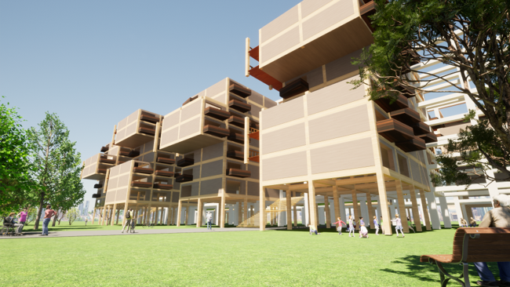
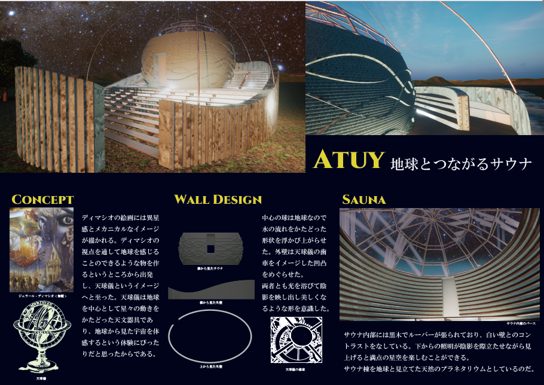

建築分野
学部時代に個人・団体で制作したもののうちで特にお気に入りのものたちです
集合住宅課題

学内課題。建物の壁床を抜き箱型の木造をはめ込む提案
天球儀のサウナ

学内コンペでの制作。
ディマシオの世界観からインスピレーションを受けた天球儀型サウナの制作
たわみウサギ

学園祭で展示した制作物。
Grasshopperを用いたアルゴリズムで設計したStanford Bunnyを作成
映像あり
船型シェルター住宅
学部卒業制作
どんな災害にも命を守って生活を続けられる家、というコンセプトで制作